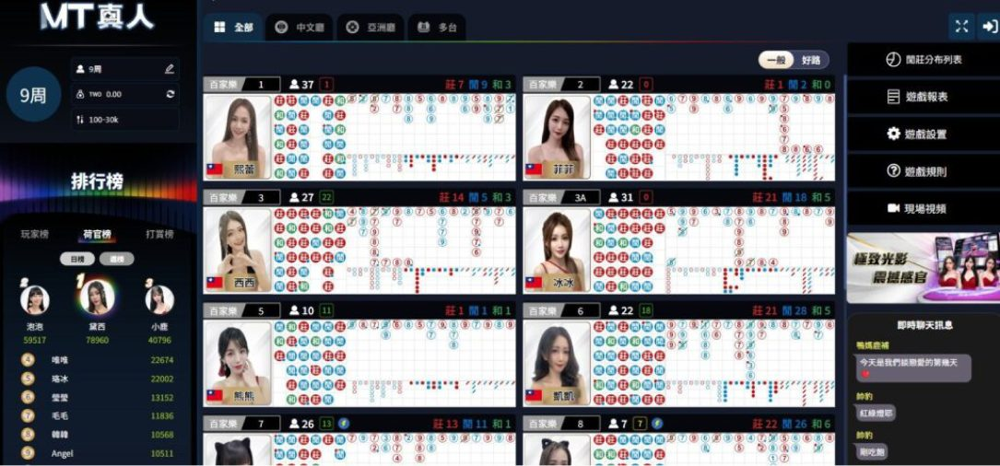
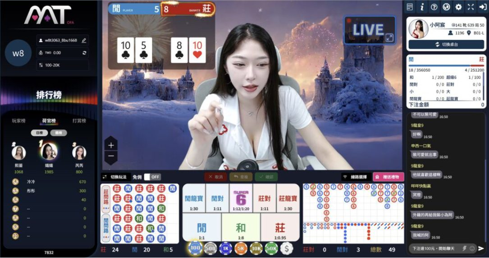
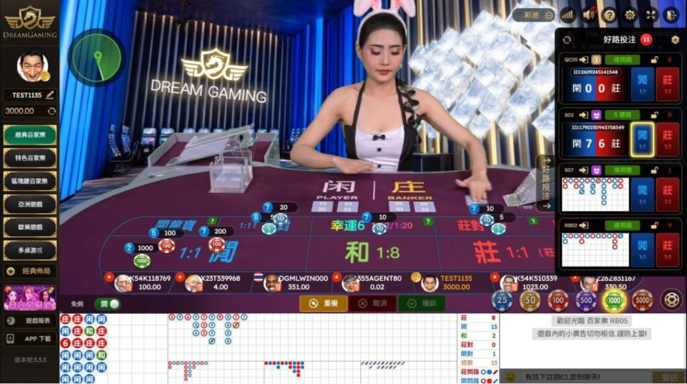

MT真人荷官回歸竟不發牌？MT百家樂試玩與JP真人試玩教學
MT百家樂 荷官真的回歸了嗎？ MT真人荷官 為何從直接發牌轉為直播陪玩？本文完整解析 MT百家 新舊版本差異、莊閒投注規則與 MT百家樂試玩 流程，並比較JP真人百家樂的真人發牌及隨機倍率特色，帶你了解 JP真人試玩 操作方式與兩種遊戲的不同。
MT百家樂是什麼？
MT百家樂是以百家樂牌局為核心的真人遊戲形式，玩家可以透過線上桌台觀看牌局畫面，並依照遊戲規則選擇莊、閒或和等投注項目。對曾經接觸過MT百家的玩家來說，過去最熟悉的特色就是由MT真人荷官直接坐在百家樂桌前發牌，讓玩家一邊觀看真人荷官洗牌、發牌與開牌，一邊參與每局投注。不過，目前MT百家樂的呈現方式已與過去不同，荷官直播與實際百家樂牌局分開呈現，直播陪玩成為新版特色之一。因此，想了解MT百家樂現在怎麼玩，就需要先認識基本規則、真人荷官角色，以及新舊版本的直播模式差異。
基本玩法與遊戲特色
MT百家樂的基本玩法與一般百家樂相同，主要比較莊家與閒家的牌面點數，哪一方最接近9點，就依照百家樂規則判定結果。玩家在每局下注倒數結束前，可以選擇莊、閒、和等投注區域，再等待牌局完成。百家樂的補牌由固定規則決定，並不是玩家自行選擇是否補牌。MT百家的特色除了基本莊閒玩法，也包含真人百家樂的直播呈現方式，而目前版本更著重荷官直播陪玩與實際牌局畫面的搭配。對第一次接觸MT百家樂的玩家來說，除了理解百家樂下注規則，也應分清楚直播互動、真人桌台與實際發牌流程，才能掌握新版遊戲特色。
| 真人直播 | MT真人荷官直播陪玩與互動 |
|---|---|
| 牌局呈現 | 搭配DG真人百家樂發牌畫面 |
| 經典玩法 | MT百家樂保留莊、閒、和投注 |
| 新版體驗 | MT百家將荷官互動與牌局分開 |
MT真人荷官
過去的MT真人荷官主要負責真人百家樂桌台的洗牌、發牌與開牌，玩家進入MT百家樂後，就能直接看到荷官坐在桌前完成每局遊戲。現在的MT真人荷官則以直播陪玩與互動為主要呈現方式，不再像過去一樣由同一位MT荷官直接完成百家樂發牌。也就是說，MT真人荷官重新出現在直播畫面，不代表舊版發牌模式完全恢復，而是荷官的角色與直播內容出現改變。對關注MT百家是否回歸的玩家而言，了解真人荷官目前負責的直播內容，比單純確認荷官是否出現在畫面中更重要。

牌局規則
MT百家樂的牌局主要分為莊、閒、和三種基本投注結果，莊家與閒家通常各取得兩張牌，再依照百家樂固定補牌規則決定是否發出第三張牌。A計為1點，2至9依牌面計點，10、J、Q、K計為0點，總點數只取個位數，例如7點加8點為15點，實際計算為5點。玩家在進行MT百家樂試玩或觀看牌局時，可以先熟悉莊閒點數、第三張牌補牌規則與勝負判定方式，再了解不同投注項目的派彩規則。即使MT百家樂提供牌路紀錄，歷史開獎結果也無法保證預測下一局走勢，理解規則仍是認識真人百家樂玩法的基礎。
| 投注項目 | 莊、閒、和三種基本選擇 |
|---|---|
| 牌面點數 | A算1點，2～9照牌面，10與花牌算0點 |
| 點數計算 | 只取個位數，例如7＋8＝5點 |
| 補牌與勝負 | 依固定規則補牌，最接近9點者勝 |
MT真人荷官現況
目前MT真人荷官已重新出現在直播內容中，但與早期直接坐在百家樂桌前發牌的模式不同。現在的MT百家樂將荷官直播陪玩與實際百家樂牌局分開呈現，玩家看到的MT荷官主要負責直播內容與互動，而百家樂牌局則可以看到DG真人桌台畫面。因此，想了解MT真人荷官是否恢復過去的發牌功能，不能只看荷官是否回歸，也需要確認目前由誰負責實際發牌、開獎與結果判定。這也是新版MT百家與舊版真人荷官模式最容易被混淆的地方。
發牌轉為直播陪玩
過去的MT真人荷官直接負責百家樂發牌，玩家觀看荷官時，也能同步看到洗牌、開牌與結果判定。現在則改以直播陪玩為主，MT荷官出現在直播畫面中，負責陪伴玩家觀看遊戲與進行互動，實際牌局則由另外的真人桌台畫面呈現。這種變化讓MT百家的直播形式與過去明顯不同，玩家不再只是觀看MT荷官直接發牌，而是同時接觸荷官直播與真人百家樂牌局兩種內容。對習慣舊版MT百家樂的玩家來說，最大的適應重點就是分辨直播陪玩畫面與實際牌局畫面的功能。

MT百家樂現在玩法
現在進入MT百家樂時，玩家可以先觀察直播畫面中的MT荷官，再確認實際百家樂牌局的桌台內容。依照本文所描述的目前畫面，MT荷官主要負責直播陪玩，百家樂牌局則透過DG真人畫面呈現，玩家仍需依照實際遊戲介面提供的莊、閒等投注區域操作。對第一次接觸新版MT百家的玩家來說，可以先確認直播區域、發牌桌台、下注倒數、牌路紀錄與開獎結果的位置，再熟悉整個操作流程。如果只是想了解介面，也可以先確認平台是否提供MT百家樂試玩或示範功能，不必直接投入真實金額。

新舊版本差異
MT百家樂新舊版本最大的差異，在於MT真人荷官的角色與百家樂牌局呈現方式。舊版以MT荷官直接發牌為核心，玩家觀看真人荷官的同時，就能看到完整百家樂流程；新版則改為MT荷官直播陪玩，實際百家樂牌局另外呈現。兩者都與真人百家樂有關，但舊版重視真人荷官直接操作牌局的體驗，新版則將直播陪玩與牌局畫面分開。如果玩家習慣傳統真人荷官直接發牌，也可以進一步比較JP真人試玩的桌台形式，了解直播陪玩、真人發牌與隨機倍率玩法之間的差異。
| 比較項目 | 舊版MT百家樂 | 新版MT百家樂 |
|---|---|---|
| 荷官角色 | MT真人荷官直接發牌 | MT荷官直播陪玩互動 |
| 牌局畫面 | MT荷官現場完成牌局 | 另以DG真人畫面呈現 |
| 遊戲特色 | 真人發牌與開牌體驗 | 直播陪玩與牌局分開 |
MT百家樂與JP真人比較
比較MT百家樂與JP真人百家樂時，最明顯的差別在於荷官角色、直播內容與特殊玩法。目前MT百家著重MT真人荷官直播陪玩，百家樂牌局透過DG真人畫面呈現；JP真人百家樂則以真人荷官直接發牌的百家樂桌台為核心，玩家可以觀看荷官完成每局牌局，並操作莊、閒等投注區域。另外，JP真人百家樂主打隨機倍率玩法，玩家需要先完成當局下注，之後系統才會顯示該局倍率，不能提前知道倍率後再決定是否下注。對想體驗直播陪玩形式的玩家，可以先了解MT百家樂目前的直播模式；若偏好真人荷官直接發牌與隨機倍率特色，則可以透過JP真人試玩熟悉桌台與下注流程。需要注意的是，隨機倍率不代表每局都能獲得額外派彩，也不保證提高長期獲利機會。
| 比較項目 | JP真人百家樂 | MT百家樂 |
|---|---|---|
| 荷官角色 | 真人荷官直接發牌 | MT真人荷官直播陪玩 |
| 牌局畫面 | 真人荷官現場開牌 | 透過DG真人畫面呈現 |
| 玩法特色 | 真人發牌＋隨機倍率 | 荷官直播＋互動陪玩 |
| 倍率機制 | 下注確認後顯示隨機倍率 | 以一般百家樂玩法為主 |
MT百家樂試玩
第一次接觸新版MT百家，可以先從MT百家樂試玩的操作流程開始了解，重點不是急著下注，而是確認目前的直播畫面、荷官角色與百家樂牌局如何搭配。由於現在的MT真人荷官主要以直播陪玩形式出現，玩家在體驗時應先觀察荷官直播區域，再確認實際發牌畫面、下注區域與結果顯示位置。如果平台提供免費試玩或示範模式，可以優先利用這些功能熟悉操作；實際是否提供免註冊試玩、免費籌碼或其他體驗方式，仍應以平台當下顯示的功能為準。透過MT百家樂試玩了解新版桌台，也有助於辨識直播陪玩與真人發牌的不同。
試玩流程
進行MT百家樂試玩時，可以先進入提供MT百家樂的遊戲平台，找到MT真人相關分類，確認目前是否開放遊戲或試玩功能，再選擇想了解的百家樂桌台。進入畫面後，先辨識MT真人荷官直播區域與實際百家樂發牌區域，接著觀察莊、閒、和投注位置、下注倒數、牌路與結果顯示方式。若有免費試玩功能，可先利用試玩熟悉操作；若沒有，則可先觀看牌局與查閱遊戲規則，不必為了了解介面而直接投入真實金額。透過這樣的MT百家樂試玩流程，就能比較清楚掌握新版MT百家的操作重點與直播特色。
- STEP 1：進入MT真人網站
- STEP 2：點選台桌
- STEP 3：開始試玩
JP真人試玩
除了了解MT百家樂試玩，想比較不同真人百家樂形式的玩家，也可以進一步認識JP真人試玩。JP真人百家樂與目前MT荷官直播陪玩的呈現方式不同，主要以真人荷官發牌、莊閒投注與隨機倍率玩法為特色。玩家進入JP真人桌台後，可以直接觀看真人荷官完成發牌，並在下注倒數內選擇投注項目；當局下注確認後，系統才會顯示隨機倍率。對熟悉舊版MT真人荷官發牌模式的玩家來說，JP真人試玩提供了另一種認識真人發牌桌台的方式，也能進一步比較兩種遊戲在直播互動、下注流程與特殊玩法上的差異。
試玩流程
進行JP真人試玩時，可以先前往JP真人網站，找到真人遊戲分類，再選擇JP真人百家樂桌台。進入遊戲後，先熟悉真人荷官直播、莊閒投注區域、籌碼選擇、下注倒數與牌路資訊，接著了解隨機倍率的顯示時機。JP真人百家樂的隨機倍率是在完成下注後才出現，因此玩家無法事先知道當局倍率，也不能在倍率顯示後修改已確認的投注。若平台提供免費試玩模式，建議先透過JP真人試玩熟悉整個流程，了解真人發牌與倍率規則，再依照自己的娛樂預算決定是否繼續體驗。
- STEP 1：進入JP真人官網
- STEP 2：點選真人
- STEP 3：選擇想玩的遊戲種類
- STEP 4：開始下注
立即體驗JP真人百家樂隨機倍率
看完MT百家樂與MT真人荷官新舊版本的差異後，如果想體驗真人荷官直接發牌的百家樂桌台，不妨前往JP真人，透過JP真人試玩熟悉莊閒下注、真人發牌、牌路資訊與隨機倍率玩法。不同於目前MT百家以直播陪玩為主的呈現方式，JP真人百家樂讓玩家直接觀看真人荷官完成牌局，並在確認下注後顯示隨機倍率。想了解兩種真人百家樂的不同，可以先從試玩認識遊戲規則與操作流程，再依自己的娛樂預算決定是否參與。
免費試玩常見問題 FAQ
Q1：MT百家是什麼？與一般百家樂有什麼不同？
MT百家是以真人百家樂為核心的遊戲形式，基本玩法包含莊、閒、和投注，並依照百家樂規則判定結果。MT百家樂與一般百家樂的主要差異在於直播呈現方式，目前以荷官直播陪玩搭配實際真人百家樂牌局畫面為主。玩家除了需要熟悉基本下注規則，也應分清楚MT真人荷官的直播互動與實際發牌內容，才能了解新版MT百家的遊戲特色。
Q2：MT真人荷官現在還有直接發牌嗎？
依照本文介紹的目前模式，MT真人荷官已重新出現在直播畫面，但不再像舊版一樣直接負責百家樂發牌，而是以直播陪玩與玩家互動為主。實際百家樂牌局則可以看到DG真人桌台畫面，因此MT真人荷官回歸並不代表過去的真人發牌模式完全恢復。想確認MT百家樂目前的玩法，應以實際平台提供的直播與牌局畫面為準。
Q3：MT百家樂新舊版本最大的差異是什麼？
舊版MT百家樂由MT荷官直接坐在真人桌前發牌，玩家可以同步觀看洗牌、發牌與開牌流程；新版則將荷官直播陪玩與實際百家樂牌局分開呈現。最大的改變是MT真人荷官從直接發牌的角色轉向直播陪玩，而基本莊閒投注與百家樂點數規則仍是玩家需要了解的核心內容。對想比較新舊MT百家的玩家來說，荷官角色與實際發牌畫面的差異是最重要的觀察重點。
Q4：MT百家樂試玩需要先儲值嗎？
MT百家樂試玩是否需要儲值，取決於平台有沒有提供免費試玩或示範模式。如果平台開放免費體驗，玩家可以先熟悉MT真人荷官直播、莊閒投注區、下注倒數與牌局結果；如果沒有免費試玩功能，也可以先觀看牌局或閱讀規則，不需要為了了解遊戲操作而直接投入真實金額。建議進行MT百家樂試玩前，先確認平台是否提供免費模式及相關使用條件。
Q5：JP真人試玩與MT百家樂試玩有什麼不同？
JP真人試玩主要讓玩家熟悉真人荷官直接發牌、莊閒投注與隨機倍率玩法，倍率會在完成下注後才顯示；MT百家樂試玩則著重了解目前MT真人荷官直播陪玩與實際百家樂牌局分開呈現的模式。兩者最大的差異在於荷官角色、桌台畫面與特殊玩法。如果想比較MT百家樂與JP真人百家樂，可以先從直播形式、發牌流程及倍率規則進行了解，再選擇適合自己的體驗方式。